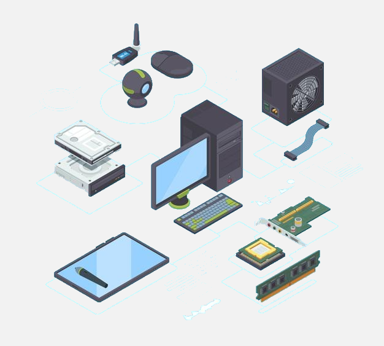

| IIT NEWS | HISTORY |
OSI_LAYERS |
OSI_DATA_FLOW |
FEEDBACK |
| APPLICATION | PRESENTATION | SESSION | TRANSPORT | NETWORK | DATALINK | PHYSICAL |
| The application layer provides an interface for application software to the end-user. End-users interact with it directly with the interface of application software. For example, a user uses a web browser to set up communication with another application software. Those interactive applications provide a set of services that allow the application layer to supply data and receive data from the presentation layer. |
 |
|||
| The presentation layer performs the task for syntax processing or converting data from one format to another format. Within the presentation layer, data received from the application layer or session layer. Then it handles translating the data such as reformatting, compression and decompression, encryption, and decryption if necessary. |
 |
|||
| The session layer performs the task for set up and maintenance the network and connection between two devices. When two devices are no longer connect, this layer being responsible for authentication and reconnection. Once the authentication and connection are established, the data will pass to the transport layer. |
 |
||||
| The transport layer is used to guarantee the success of data delivery. In this layer, data are divided into small packets called a segment. The transport layer determines the flow of these segments. It controls the sending order of segments and the amount of data transmitted. Then, data are having error checking. Since data may be corrupted in the previous steps, the error checks can ensure the data's reliability and integrity. |
 |
|||
| The network layer is used for logical addressing, determinate path, internetworking, and routing. In this layer, data will be packetizing and add the destination address and source to the header of each frame of data and finds the most efficient network path based on the network conditions, the priority of service, and other factors. At last, the network layer provides the routing services within an internetwork and passes the packet to the next layer. The protocols used to route the network traffic are known as Network layer protocols. Examples of protocols are IP and IPv6. |
 |
|||
| The Data-Link layer is responsible for the error-free transfer of data frames. Its main functions are flow control, error control, access control, and physical addressing. When data from other layers pass to this layer, the layer adds a header to the packet that contains the hardware destination and source address. While sending the packet to the receiver, the data-link layer controls the data transmission by control the processing speed. The sender and receiver should have the same transmission speed. Otherwise the packet may be lost or corrupted. |
 |
 | ||
The physical layer passes data on to the media. Data in the model are received or sent to another device in this layer. To send to another device,
data need to pass through network devices, such as:
|